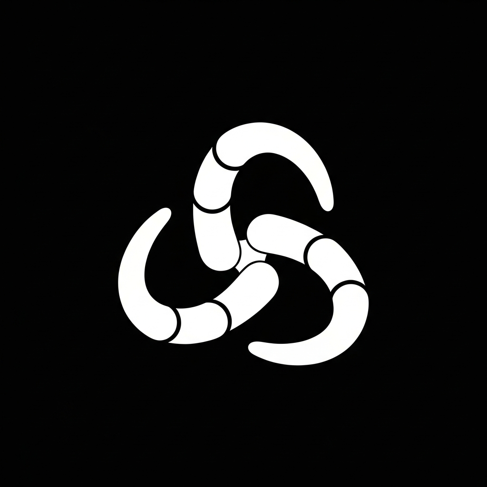

git clone https://github.com/dannygardner26/Sworm.git && cd Sworm && npm install
deploy ai agents and apps across multi-monitor setups via named formations. define layouts in yaml, deploy with one command.
yaml-defined multi-monitor layouts
multi-provider llm with tool use
whisper-powered speech commands
win32 keyboard shortcuts
rich desktop ui with terminal panes
auto-create isolated branches